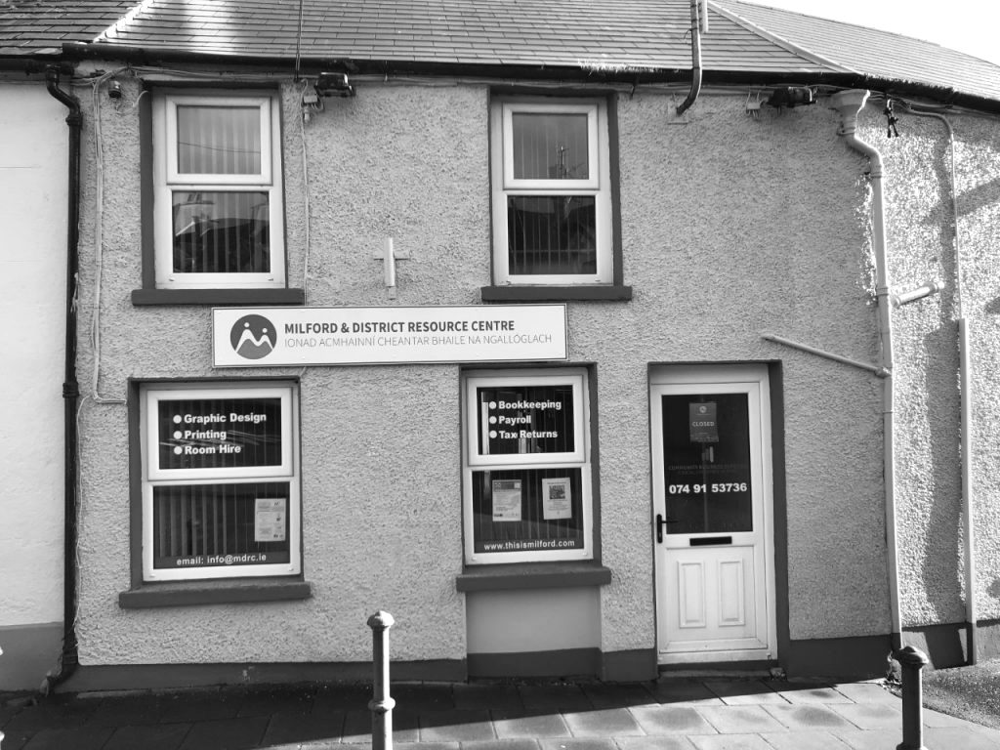

Welcome to the Milford and District Resource Centre
Milford & District Resource Centre is a facility based on Market Square at the top of the town in Milford, Co. Donegal. We are here to support and facilitate the community in making the wider Milford area a better place to live, work and play in.
Originally founded as IRD Milford in the 1990s, MDRC is a community resource which is governed by a Board of Directors. We aim to support all existing community groups and sports club in the Milford area, as well as to help and guide the setting up of any new projects or initiatives in the district.
About Us
Milford & District Resource Centre is a facility based on Market Square at the top of the town in Milford, Co. Donegal. We are here to support and facilitate the community in making the wider Milford area a better place to live, work and play in. Originally founded as IRD Milford in the 1990s, MDRC is a community resource which is governed by a Board of Directors. We aim to support all existing community groups and sports clubs in the Milford area, as well as to help and guide the setting up of any new projects or initiatives in the district. MDRC is funded by a central grant from the Department of Rural and Community Development, administered by Pobal. This grant covers 90% of salary costs for 5 of our 6 employees. One of our central aims is to provide employment in the local community. We operate a social enterprise ‘Community Business Solutions’ which generates an income to cover overheads associated with the running of the resource centre. Any surplus profits are then transferred into the Milford Development Fund, which is expressly for community development initiatives and supporting existing community groups and sports clubs in the wider Milford area. We are also the base for social prescribing in the wider Milford-Fanad-Rosguill area. This position is fully funded by the HSE.
Meet the Team
our office cleark who will help you with printing and photocopying.
our graphic designer who will help you with your branding and graphic design needs.
our Social Prescriber who will help you with social inclusion and therapy.
our Bookeeper who will help you with your tax returns and wages.
our Bookeeper who will help you with your tax returns and wages.
our Manager who will help you with your grant applications.